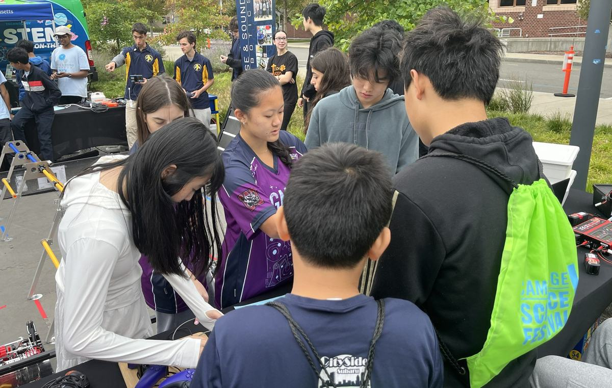
September 29, 2024Cambridge Science Festival
Members joined GNCE Diamond to demonstrate FTC robots and introduce visitors to FIRST.
Spreading STEM in Weston and beyond.
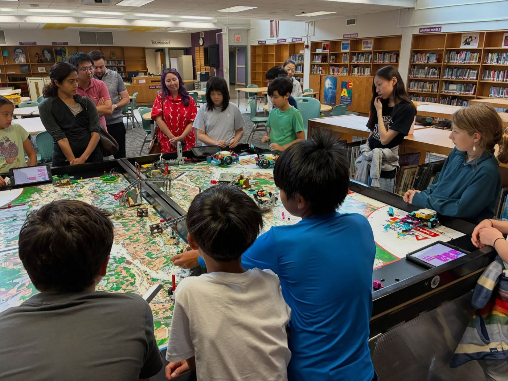
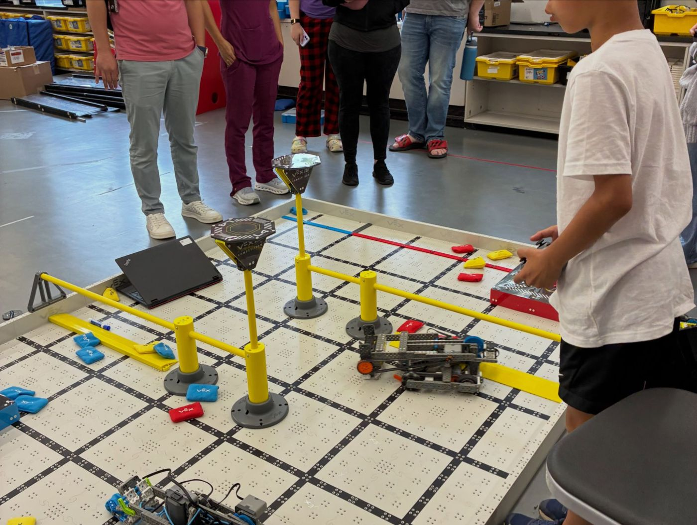
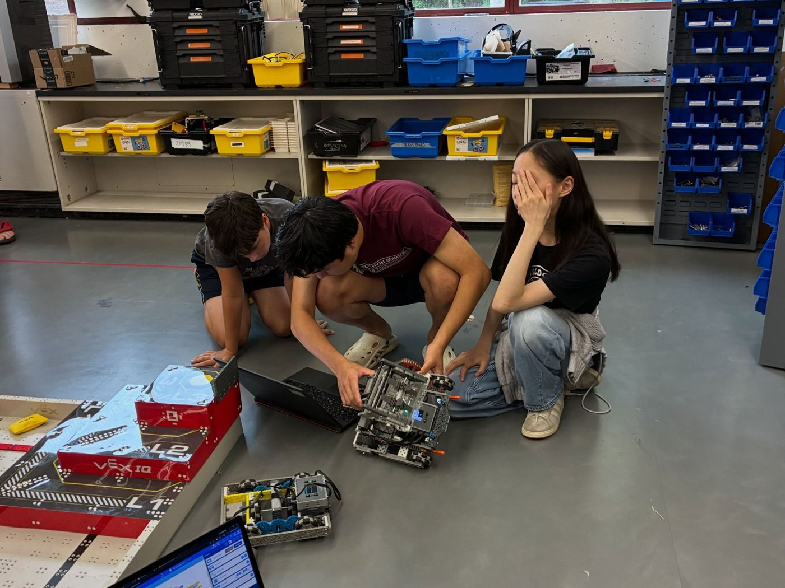
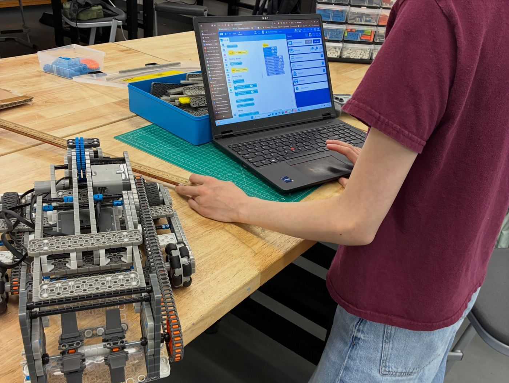
We spent a week of the summer running a robotics camp for about 13 students in grades 4–8. Campers learned the basics of both VEX IQ and FIRST LEGO League: building drivetrains and mechanisms, writing block code, and running missions on a real FLL table.
On Friday, the last day, campers showed off their robots to their families at a showcase, driving VEX robots on the field and running their FLL missions.
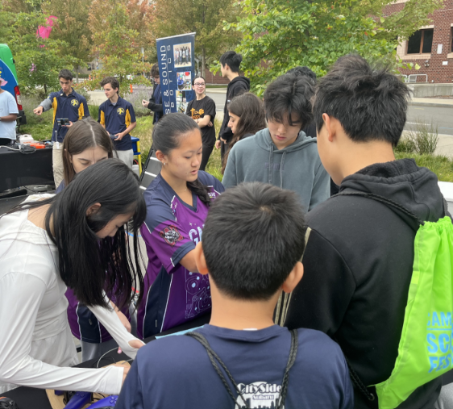
Sep 21, 2025Our members helped run FTC robot demos at the Cambridge Science Festival. Alongside our sister team, GNCE Diamond, we showed the spirit of FIRST to the crowds of visitors who stopped by.
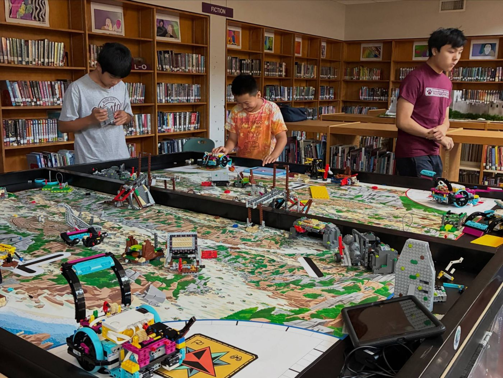
Sep 23, 2025 · 2025–26 FLL seasonWe helped Weston's FIRST LEGO League program grow from 4 teams to 17 teams and 122 students, including 10 brand-new 4th and 5th grade teams at Field School. Money raised from our summer camp covered registration for all 10 of those teams, and the camp helped recruit and train new parent coaches.
On Sep 23 we ran a practice scrimmage so the teams could get a feel for a real qualifier. All season we mentored coaches and students on running weekly meetings, programming their robots, and managing their time. 9 of the 10 Field School teams competed at MA qualifiers, and 2 advanced to States.
“The FLL season for the elementary teams would not have been a success if not for the support and guidance from the high school FTC 26413 team.” Jessie Chan, lead coach, Field School FLL
“It was so well organized. The teams learned a lot today.” FLL coach, after the scrimmage
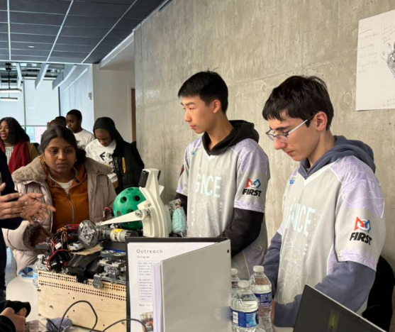
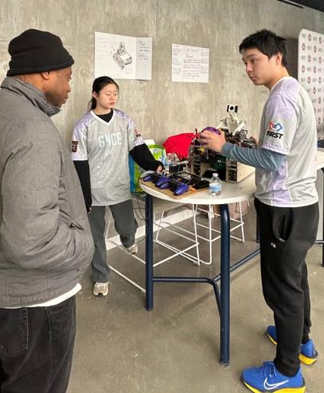
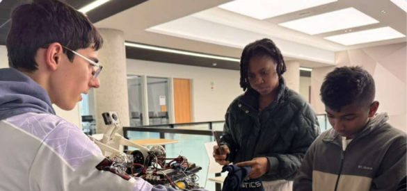
We mentored and took part in a robotics showcase at Clark University hosted by Galactic Einsteins, a team we've supported for a long time. Made up mostly of students from South Africa, Galactic Einsteins is helping make FIRST more inclusive and spread its values to a wider community.

September 29, 2024Members joined GNCE Diamond to demonstrate FTC robots and introduce visitors to FIRST.
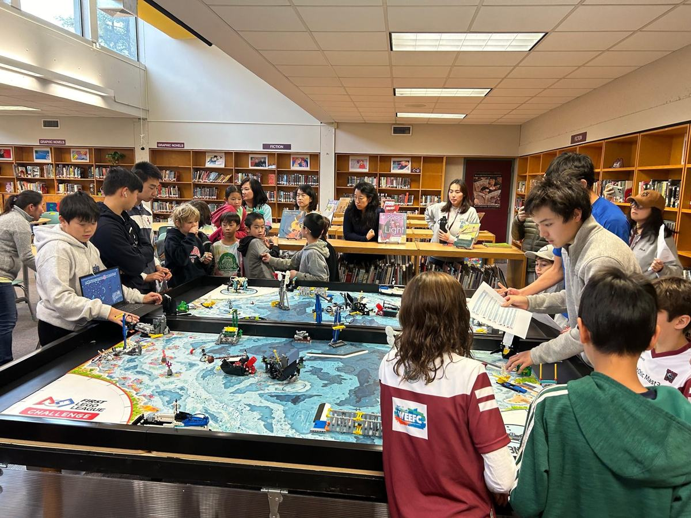
November 23, 2024We hosted a practice competition for five Weston FIRST LEGO League teams, simulating judging and robot matches to help them prepare for their qualifiers.
Thank you to the sponsors who make our season possible.
Our Into the Deep portfolio names SolidWorks (CAD access), Weston Owl (local coverage), and WEEFC (support for Weston FLL and FTC programs).